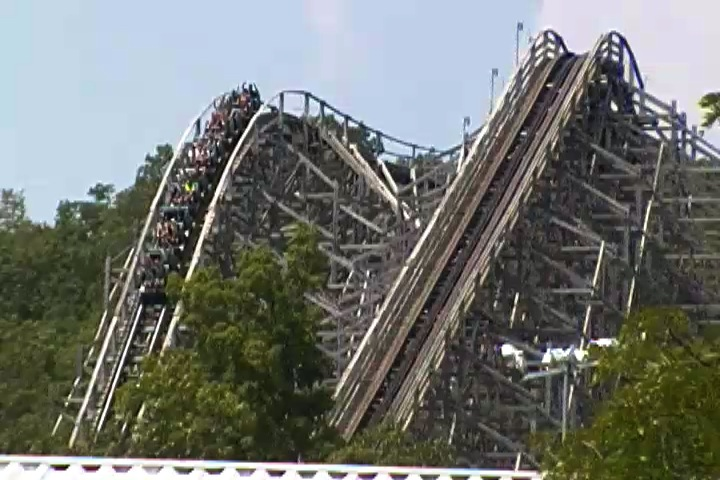
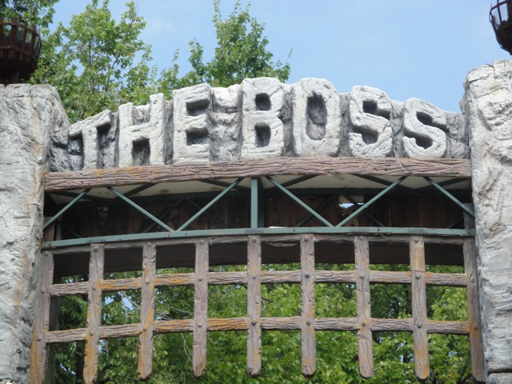

| |
Boss Review

We're here at Six Flags St Louis. Today we're going to review the Boss, which while the biggest of the parks wooden coasters, is far from the best. After getting in the cars and pulling down the lap bars, we're off. We first start off with some straight track. Ooh. How exciting. Please tell me that there's more straight track all throughout the ride!!! We then roll through an S Curve, ending our series of straight track. =( LAME!!!! We then turnaround, briefly getting a look at the giant mess of wood that we hope will be of tremendous and epic proportions. Well, we're currently climbing the lifthill, so we'll find out. We've got a lot of lifthill to climb, so get comfortable, or at least as comfortable as you can get in the Gerstlauter trains. Yeah, they're not comfortable. Anyways, we've reached the top of the lifthill, gain a little speed, roll through a turn, and are now staring down at it. The first drop. We drop. Down and down we go, we are gaining lots of speed and going very fast. This is awesome. And now that we went down a big first drop, guess what we get more of? Yep. STRAIGHT TRACK!!!!!! "YAY!!!!!!!!!" We shout as we roar through all that straight track. After roaring under the rides structure through all that straight track, we dip down a little before SLAMMING into the side of the seats as we now roar through curved track. And just to let you know now, the Boss is NOT the type of ride you want ANY laterals on. Laterals are bad Bad BAD on this ride. They HURT!!!!! Eventually, all the straight and curved track must end as we rise up a big hill as we turn a little. But don't worry. It won't be long. Oh look, that turn has ended and now we're heading down another drop. That gives us back the speed we lost. And how else should we use it than with more SLIGHTLY CURVED TRACK!!!!! YAY!!!!!! I really appreciate the slam to the side this ride gives you as well as the blandness that such interesting track has to offer. That all comes to an end as we rise up another big hill to give us a good view of Six Flags St. Louis as well as a lot of trees. We then go through another turnaround before going through more straight track that leads straight into a drop. Wait, this seems very familiar. Oh yeah. Ghostrider @ Knotts Berry Farm does this as well. Except Boss doesn't stop here. YAY!!!! But while even when it stops, Ghostrider still has some airtime in that drop. On the Boss, there is none. We just go down the drop to pick up the speed that we had lost before giving it back up as we rise up another hill that dumps us into a swooping turn. We get a nice view of Mr. Freeze during this part of the ride. We really wish we were on Mr. Freeze right now and not on the Boss. But oh well. Back down the drop we go. This leads us into a small hill. It doesn't have any airtime, but it does dump us straight into a turn that HURTS!!!! Damn Gerstlauter Trains. >=( That dip down leads us through a little more straight track before we rise and turn and dip back down. We then rise up and start going through a giantass double helix. It's fairly flat, doesn't do much other than keep turning for eternity, and constantly bores us. It's like being on Son of Beast @ Kings Island without the chest vibrations. After that double helix, here the double not only stands for going around twice, but rather because the boredom in this helix is double than on most mine trains. We then go through a couple bland dips and we roll into the brake run. So yeah, that was bland and boring, kind of like Villian back when it was at Geauga Lake. But wait, it's not over yet!!! We go through a turn and get a grand finale of EVEN MORE STRAIGHT TRACK!!!!!! Yeah, this ride sucks. The ride seems like a combination of Ghostrider, Villian, and Son of Beast. But aside from that, the ride has painful laterals, and worst of all, it's just a bad layout. I mean, it may be big, but it does NOTHING interesting. Most of the ride is nothing but straight track, slightly curved track, or bland hills with a turnaround, which counts as curved track. It almost seems like a coaster a 7 year old kid would design in RCT. "I WANT TO MAKE A BIG WOODEN COASTER!!!!!!" *builds big drop on a wooden coaster* "Ok son, now what will the ride do?" "I don't know." *subconsiously places straight track because he's bored.* "Hey, I just made another part of the ride!!! I think it should slightly curve now!!!!!" Yeah, that seems like how this ride was designed. It's a lame design and a lame ride. Not recommended from Incrediblecoasters.
6/10
Location: Six Flags St. Louis
Opened: 2000
Built by: Custom Coasters
Last Ridden: August 10, 2010
Boss Photos

|